Case Study: Measuring Group Alignment in the CES
A technical tutorial of
survalign with the Cooperative Election Study
case-ces.RmdCase Study: Measuring Group Alignment in the Cooperative Election Study (CES)
The Cooperative Election Study (CES) is a large-scale collaborative survey fielded annually around U.S. elections, with tens of thousands of respondents. It includes a rich set of policy preference items, making it well-suited for measuring intra-group alignment across political, demographic, and geographic subgroups.
data(ces)Exploring the Data
Before measuring alignment, it is worth inspecting which items are
available across survey waves and how support is distributed across
groups. plot_coverage() shows which items were fielded in
each wave, while plot_support() summarizes the share of
respondents supporting each item.
ces |>
plot_coverage(wave_col="year", ques_stem="immig")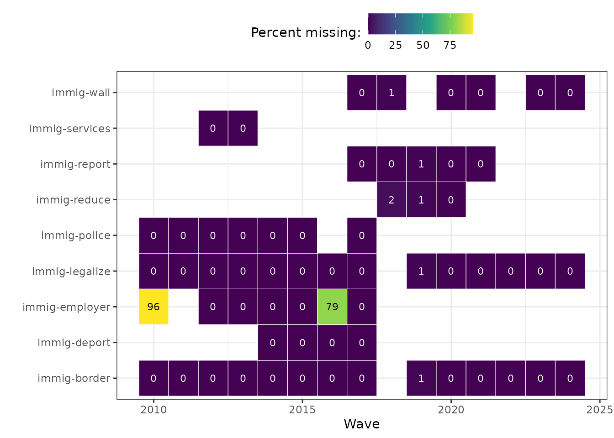
ces |>
plot_coverage(wave_col="year", ques_stem="spend")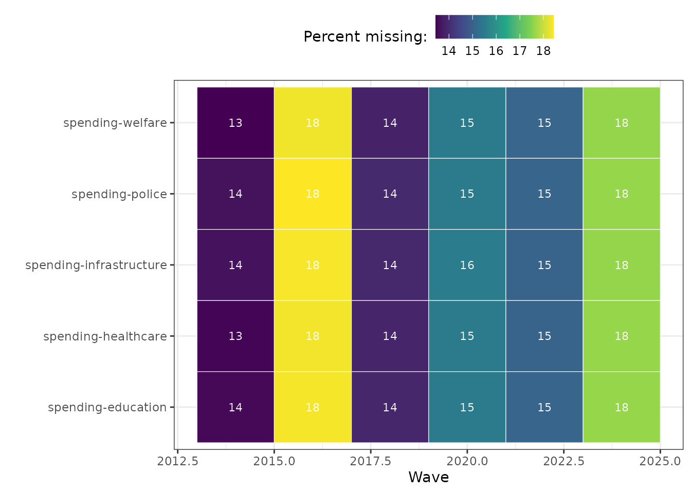
# Cross-sectional support
ces |>
filter(year == 2024) |>
plot_support(weight_col="weight", group_col="pid3", ques_stem="immig") +
ggtitle("Support for CES Immigration Items (2024)")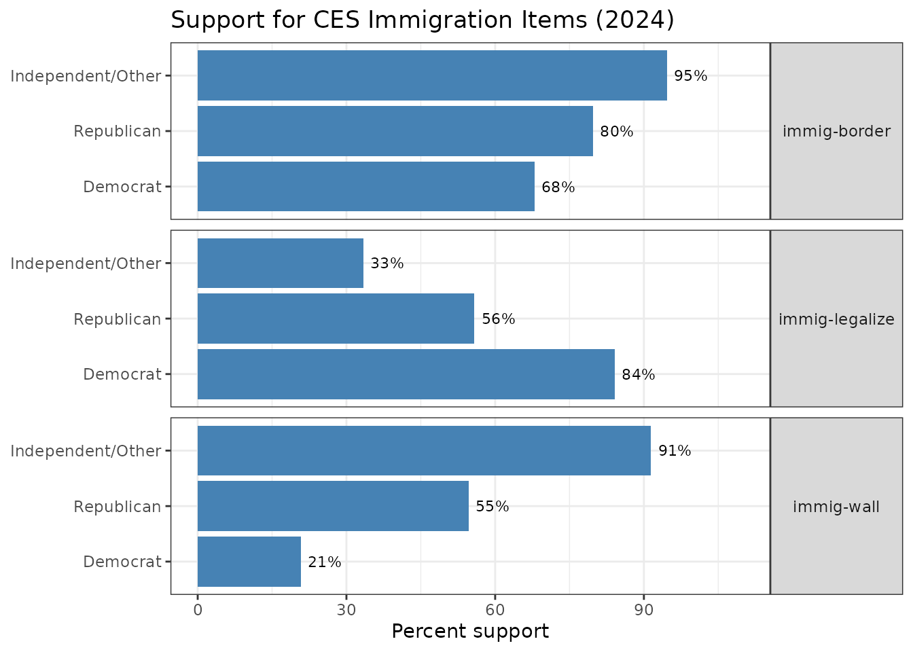
plot_pairwise_support() gives a sense of how correlated
responses are across items within a group — a useful diagnostic for
whether items are tapping a coherent underlying dimension.
ces |>
filter(pid3 == "Democrat", year == 2024) |>
plot_pairwise_support(ques_stem="spend")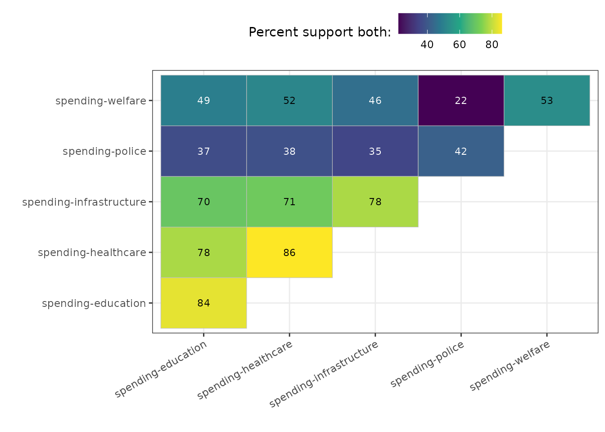
ces |>
filter(pid3 == "Democrat", year == 2024) |>
plot_pairwise_support(ques_stem="abort")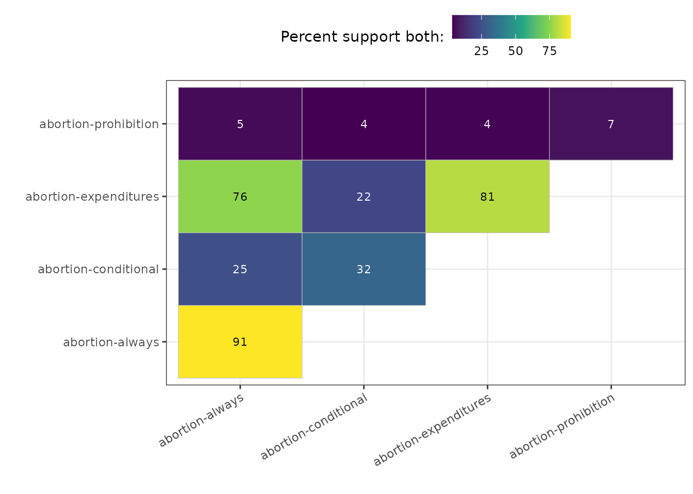
Measuring Alignment
The core items used in the alignment analysis below cover immigration, environmental policy, gun control, military spending, and trade — areas where partisan divides are typically most pronounced in the CES.
CES Core Policy Preference Items (click to expand)
-
abortion_20weeks: Ban abortions after the 20th week of pregnancy -
abortion_always: Always allow a woman to obtain an abortion as a matter of choice -
abortion_conditional: Permit abortion only in cases of rape, incest, or danger to woman’s life -
abortion_coverage: Allow employers to decline coverage of abortions in insurance plans -
abortion_expenditures: Prohibit the expenditure of federal funds for any abortion -
abortion_prohibition: Make abortions illegal in all circumstances -
enviro_airwateracts: Strengthen EPA enforcement of the Clean Air Act and Clean Water Act even if it costs jobs -
enviro_carbon: Give the Environmental Protection Agency power to regulate carbon dioxide emissions -
enviro_mpg_raise: Raise required fuel efficiency standards for automobiles -
enviro_renewable: Require states to use a minimum amount of renewable fuels for electricity generation -
guns_assaultban: Ban assault rifles -
guns_bgchecks: Require criminal background checks for all gun sales -
guns_names: Prohibit state and local governments from publishing names and addresses of gun owners -
guns_permits: Make it easier for people to obtain concealed-carry permits -
immig_border: Increase border security along the U.S.–Mexico border -
immig_deport: Deport undocumented immigrants -
immig_employer: Penalize employers for hiring undocumented immigrants -
immig_legalize: Grant legal status to undocumented immigrants meeting work and tax requirements -
immig_police: Allow police to question individuals about immigration status -
immig_reduce: Reduce overall levels of immigration -
immig_report: Require local police to report undocumented immigrants to federal authorities -
immig_services: Provide public services to undocumented immigrants -
immig_wall: Build a wall along the U.S.–Mexico border -
military_democracy: Use military force to promote democracy abroad -
military_genocide: Use military force to stop genocide -
military_helpun: Use military force to help the United Nations enforce international law -
military_oil: Use military force to ensure access to foreign oil supplies -
military_protectallies: Use military force to protect U.S. allies under attack -
military_terroristcamp: Use military force to destroy terrorist training camps -
trade_canmex_except: Exclude Canada and Mexico from U.S. trade agreements -
trade_canmex_include: Include Canada and Mexico in U.S. trade agreements -
trade_china: Support or oppose free trade agreements with China
We begin with a simpler case: measuring alignment on spending
preference items alone. plot_cumulative_majority() shows
the distribution of item-level agreement, ordered by support level — a
useful first look at where consensus is strong or weak within a
group.
ces24_spend_align <- ces |>
filter(year == 2024) |>
measure_alignment(
ques_stem="spend",
group_col="pid3",
id_col="id"
)##
## [0/5] Pivotting...
## [1/5] Computing group-wise plurality opinions
## [2/5] Measuring question-level respondent group alignment
## [3/5] Sorting questions by alignment within each group
## [4/5] Measuring respondent's overall group alignment
## [5/5] Computing cumulative pluralities
ces24_spend_align |>
plot_cumulative_majority()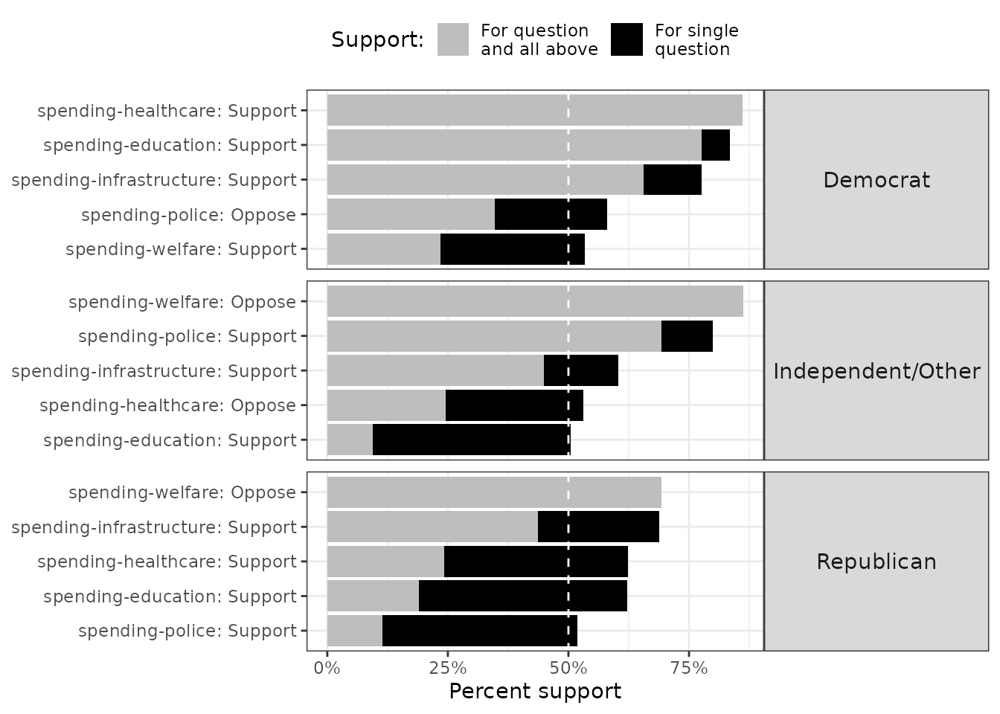
Now we turn to the broader core policy battery.
plot_group_alignment() shows the full distribution of
pairwise alignment scores across all respondent pairs within each group.
The further right the distribution is shifted, the more internally
cohesive the group.
ces24_core_align <- ces |>
filter(year == 2024) |>
measure_alignment(
ques_stem="(abort|immig|enviro|guns|military|trade)",
group_col="pid3",
id_col="id"
)##
## [0/5] Pivotting...
## [1/5] Computing group-wise plurality opinions
## [2/5] Measuring question-level respondent group alignment
## [3/5] Sorting questions by alignment within each group
## [4/5] Measuring respondent's overall group alignment
## [5/5] Computing cumulative pluralities
ces24_core_align |>
plot_group_alignment(show_dists_as="histogram")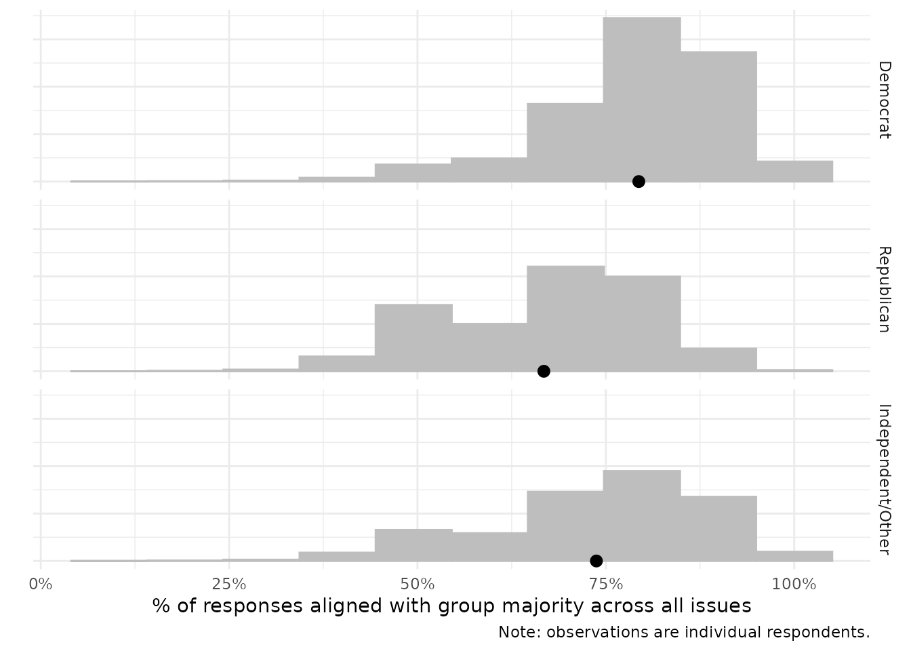
The alignment curve summarizes how alignment accumulates as the threshold for “agreement” increases. A group whose curve stays high across thresholds exhibits robust consensus; a curve that drops off quickly suggests only shallow or item-specific agreement.
ces24_core_align |>
plot_alignment_curve(group_colors=pid_colors, interactive=TRUE)
summary(ces24_core_align, format="long")| pid3 | statistic | value |
|---|---|---|
| Democrat | Cumulative Perfect Alignment | 0.05 |
| Democrat | Cumulative Weak Alignment | 0.97 |
| Democrat | Alignment Mean | 0.79 |
| Democrat | Alignment SE | 0.00 |
| Democrat | N Respondents | 22982.00 |
| Democrat | Mean Plurality | 0.79 |
| Democrat | Cumulative Issue Alignment N | 8.00 |
| Democrat | Cumulative Issue Alignment Prop | 0.47 |
| Republican | Cumulative Perfect Alignment | 0.00 |
| Republican | Cumulative Weak Alignment | 0.88 |
| Republican | Alignment Mean | 0.67 |
| Republican | Alignment SE | 0.00 |
| Republican | N Respondents | 18663.00 |
| Republican | Mean Plurality | 0.67 |
| Republican | Cumulative Issue Alignment N | 4.00 |
| Republican | Cumulative Issue Alignment Prop | 0.24 |
| Independent/Other | Cumulative Perfect Alignment | 0.03 |
| Independent/Other | Cumulative Weak Alignment | 0.93 |
| Independent/Other | Alignment Mean | 0.74 |
| Independent/Other | Alignment SE | 0.00 |
| Independent/Other | N Respondents | 15913.00 |
| Independent/Other | Mean Plurality | 0.74 |
| Independent/Other | Cumulative Issue Alignment N | 5.00 |
| Independent/Other | Cumulative Issue Alignment Prop | 0.29 |
Alignment with Different Missing Value Assumptions
By default, measure_alignment() excludes missing
responses from the denominator. An alternative is to treat
NA responses as explicit non-support — a more conservative
assumption that increases the penalty for non-response. Under this
assumption, alignment tends to fall noticeably for all groups,
reflecting the substantive uncertainty that unanswered items
introduce.
ces24_core_align_na <- ces |>
filter(year == 2024) |>
measure_alignment(
ques_stem="(abort|immig|enviro|guns|military|trade)",
group_col="pid3",
id_col="id",
treat_na="unaligned"
)##
## [0/5] Pivotting...
## [1/5] Computing group-wise plurality opinions
## [2/5] Measuring question-level respondent group alignment
## [3/5] Sorting questions by alignment within each group
## [4/5] Measuring respondent's overall group alignment
## [5/5] Computing cumulative pluralities
ces24_core_align_na |>
plot_alignment_curve(group_colors = pid_colors)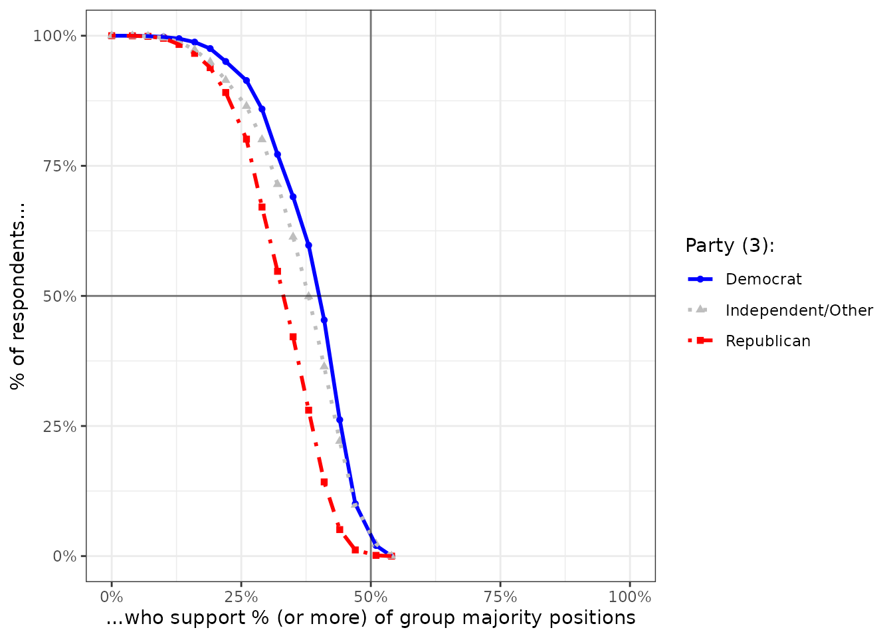
Alignment Over Time
Policy preferences are not static, and neither is within-group
consensus. measure_alignment_waves() computes alignment
separately for each survey wave, allowing us to track whether groups are
becoming more or less internally cohesive over time.
# Temporal support
ces |>
plot_support(wave_col="year", weight_col="weight",
group_col="pid3", ques_stem="immig") +
ggtitle("Support for CES Immigration Items")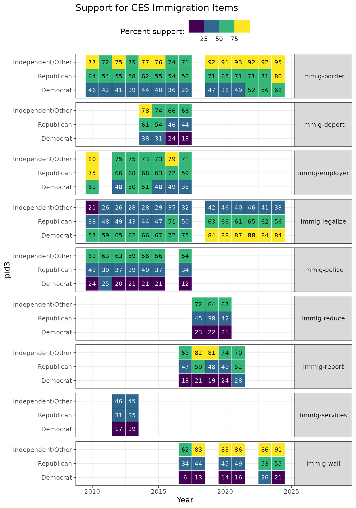
# Measure alignment over time
ces_pid_align <- ces |>
measure_alignment_waves(
ques_stem="(abort|immig|enviro|guns|military|trade)",
group_col = "pid3",
wave_col = "year",
id_col = "id",
weight_col = "weight",
verbose = FALSE
)The alignment mean summarizes, on average, what share of a group’s members agree on each policy item. Higher values reflect greater internal consensus. Examining this metric over time reveals whether partisan sorting on core policy dimensions is intensifying, stabilizing, or reversing.
ces_pid_align |>
plot_group_stat_over_time(
metric = "alignment_mean",
wave_col = "year",
group_col = "pid3",
group_label = "Party ID",
group_colors = pid_colors
)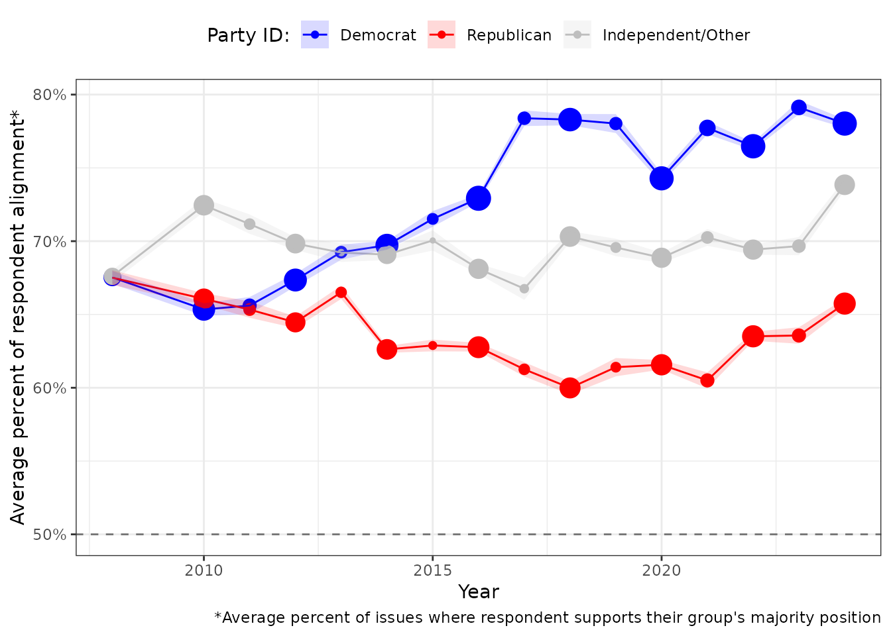
Cumulative weak alignment is a more lenient threshold: it counts the share of items on which at least a bare majority of group members agree. This metric is less sensitive to the handful of items where near-unanimous consensus exists, and captures whether a group agrees directionally across most issues — even if not overwhelmingly so.
ces_pid_align |>
plot_group_stat_over_time(
metric = "cumulative_weak_alignment",
wave_col = "year",
group_col = "pid3",
group_label = "Party ID",
group_colors = pid_colors
)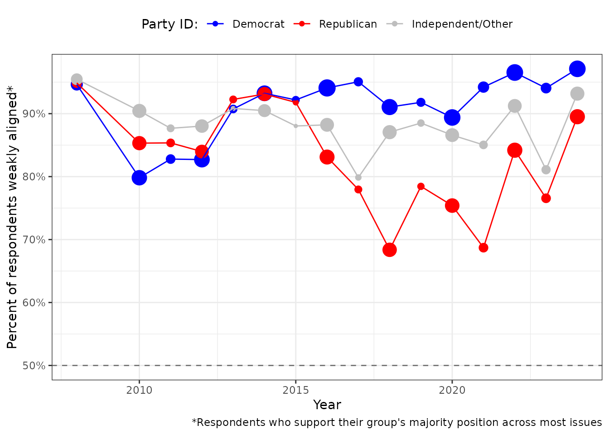
Alignment on Different Issue Baskets
Alignment scores can be sensitive to the choice of issue baskets. The core policy items above (immigration, guns, environment, etc.) may capture different dimensions of consensus than, say, spending preferences. The spending battery asks respondents to trade off government spending levels across policy domains, which may produce different alignment patterns than direct policy support questions.
CES National Spending Items (click to expand)
-
spending_education: Increase government spending on education -
spending_healthcare: Increase government spending on health care -
spending_infrastructure: Increase government spending on infrastructure -
spending_police: Increase government spending on police -
spending_welfare: Increase government spending on welfare
# Plot support
ces |>
plot_support(wave_col="year", weight_col="weight",
group_col="pid3", ques_stem="spend") +
ggtitle("Support for CES Spending Items")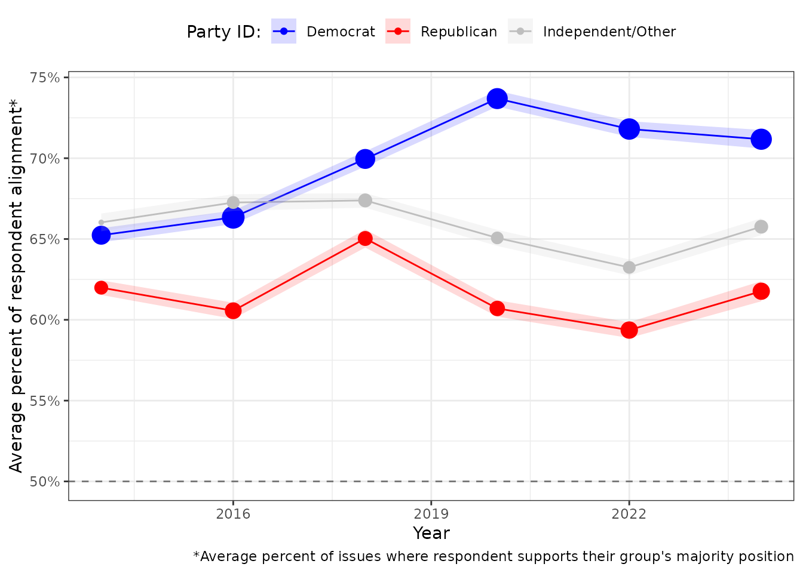
# Measure alignment
ces_spend_align <- ces |>
measure_alignment_waves(
ques_stem = "spend",
group_col = "pid3",
wave_col = "year",
id_col = "id",
weight_col = "weight",
verbose = FALSE
)
# Plot alignment means
ces_spend_align |>
plot_group_stat_over_time(
metric = "alignment_mean",
wave_col = "year",
group_col = "pid3",
group_label = "Party ID",
group_colors = pid_colors
)
# Plot cumulative weak alignment
ces_spend_align |>
plot_group_stat_over_time(
metric = "cumulative_weak_alignment",
wave_col = "year",
group_col = "pid3",
group_label = "Party ID",
group_colors = pid_colors
)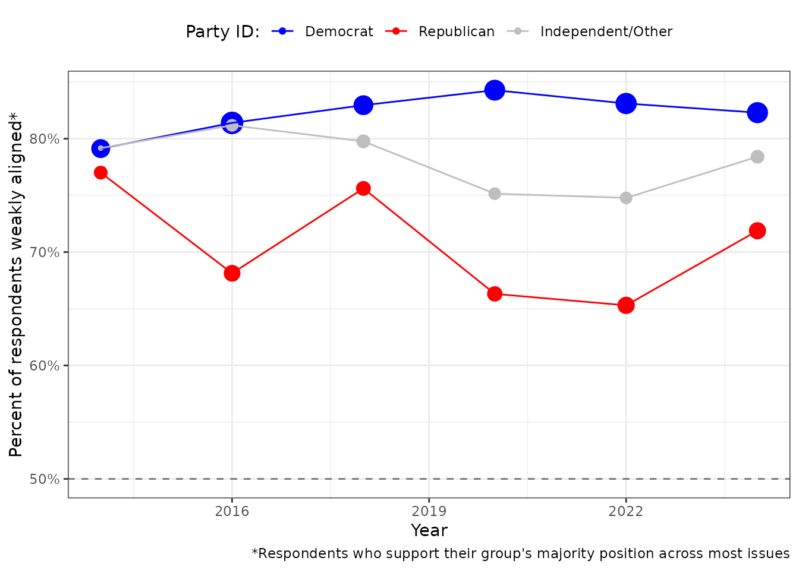
Alignment Within Different Groups
Party ID is a natural grouping variable for studying policy
alignment, but survalign works with any categorical
grouping. Here we examine alignment on core policy items by
racial/ethnic group, where the patterns of internal consensus may differ
substantially from the partisan case.
ces24_race_align <- ces |>
filter(year == 2024) |>
measure_alignment(
ques_stem="(abort|immig|enviro|guns|military|trade)",
group_col="race5",
id_col="id"
)##
## [0/5] Pivotting...
## [1/5] Computing group-wise plurality opinions
## [2/5] Measuring question-level respondent group alignment
## [3/5] Sorting questions by alignment within each group
## [4/5] Measuring respondent's overall group alignment
## [5/5] Computing cumulative pluralities
ces24_race_align |>
plot_alignment_curve()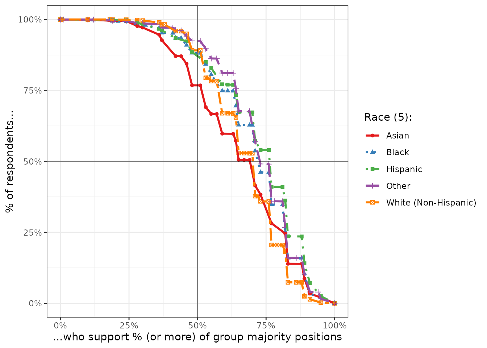